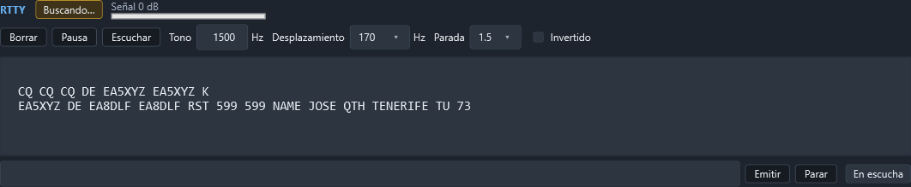
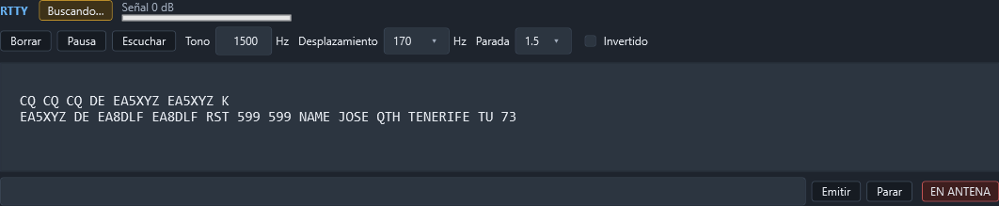

RTTY
La página Operar › RTTY decodifica y transmite RTTY (radioteletipo) con el AFSK y el Baudot del propio programa: no hace falta fldigi, MMTTY ni ningún otro programa, ni de un lado ni del otro.
A diferencia de CW, aquí sí se transmite desde el programa. RTTY son dos tonos de audio (como FT8), así que el PC genera el audio y lo saca por la tarjeta de sonido, con el PTT sostenido por el mismo vigilante que usan el módem digital y la fonía.


Dónde está
La página entera: arriba el estado y los mandos, en medio el texto recibido (como una terminal, con desplazamiento), y abajo la línea de transmisión.
Escucha mientras se ve la página y no está en pausa, por la entrada elegida en Configuración › Audio y digitales. Si esa entrada está cerrada, ofrece Escuchar, que la abre sin tocar la radio. La entrada y la salida de audio se comparten con CW, el módem digital y la fonía: nada se queda abierto cuando no hace falta.
Qué enseña
- Enganchado o Buscando…: si el texto que llega tiene varios caracteres válidos seguidos (el bit de parada hace de validación), se engancha; el ruido no escribe nada.
- Señal en dB sobre el ruido.
- El texto recibido, en una terminal con desplazamiento. Borrar la limpia.
El tono, el desplazamiento y la parada
Una sola señal sintonizada a la vez, como un TU de verdad: no hay varias señales leídas en paralelo como en CW.
- Tono: el tono de marca, de 300 a 3000 Hz. Sirve igual para escuchar y para transmitir: es el mismo TU en los dos sentidos. Se escribe y se pulsa
Intro, o se mueve con las flechas o la rueda del ratón (±10 Hz). - Desplazamiento: 170 Hz (lo habitual en HF) u 850 Hz.
- Parada: 1, 1,5 (de fábrica, lo normal a 45,45 baudios) o 2 bits.
- Invertido: el tono de marca es el más bajo de los dos («reversa»). Con el filtro de BLU del equipo puesto al revés, se oye invertido.
- La velocidad está fija en 45,45 baudios (el «60 WPM» de radioaficionado): es con la que se trabaja casi siempre en HF.
El tono, el desplazamiento, la parada y la inversión se guardan solos: al volver a abrir el programa siguen como se dejaron.
Transmitir
Se escribe el texto en la casilla de abajo y se manda con Intro o el botón Emitir:
- La primera vez de la sesión se pregunta «¿Transmitir en RTTY?» —la misma pregunta, con el mismo «no volver a preguntar», que la telegrafía y la fonía—. Se puede apagar para siempre desde ahí, o encenderla otra vez en Configuración › Audio y digitales.
- Confirmado, se pide la antena al vigilante del PTT una sola vez y se genera y reproduce el audio del texto.
- Si ya se está transmitiendo, lo escrito se encola detrás, sin volver a preguntar: se puede seguir escribiendo mientras sale, como en la telegrafía.
- El PTT se suelta en cuanto se vacía la cola, se pulsa Parar o falla algo: nunca se queda pegado.
EN ANTENA / En escucha dice si el PTT está arriba por esta transmisión.


El ruido no escribe
Como en CW, lo decodificado no se entrega hasta que se enganchan varios caracteres válidos seguidos; uno inválido antes de engancharse lo tira todo. Ya enganchado, una ráfaga suelta de QRN no desengancha la señal entera.